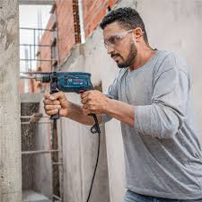

Avaliacao tecnica
Verificacao do defeito, analise do equipamento e orientacao sobre o melhor caminho.
Atendimento em Campinas e regiao
Trabalhamos com manutencao, diagnostico e suporte para ferramentas eletricas, motores, bombas de agua e maquinas de jardinagem, com atendimento direto e objetivo.

Envie sua duvida, solicite avaliacao e acompanhe o status da ordem de servico.
O que fazemos
Uma apresentacao mais clara ajuda o cliente a entender rapido se voce resolve o problema dele. Por isso o site agora destaca especialidades, atendimento e proximos passos.
Verificacao do defeito, analise do equipamento e orientacao sobre o melhor caminho.
Reparo de componentes eletricos e mecanicos com foco em desempenho e seguranca.
Contato simples por telefone ou WhatsApp para agilizar duvidas, retirada e acompanhamento.
Categorias atendidas
Equipamentos de uso intenso que exigem manutencao precisa e revisao periodica.
Analise de funcionamento, troca de componentes e suporte tecnico para retorno seguro.
Atendimento para equipamentos de jardim com foco em desempenho e vida util.
Por que isso ajuda o site
O visual foi reorganizado para destacar servicos, facilitar leitura no celular e orientar o usuario para duas acoes principais: pedir um orcamento ou consultar uma ordem de servico.
Melhor leitura em telas pequenas.
Explica rapido o que a empresa faz e para quem.
Links clicaveis e CTA principal no topo da pagina.
Acompanhe sua ordem de servico
Digite o numero informado no atendimento para verificar o status atual. Se precisar, voce tambem pode entrar em contato direto com a loja.